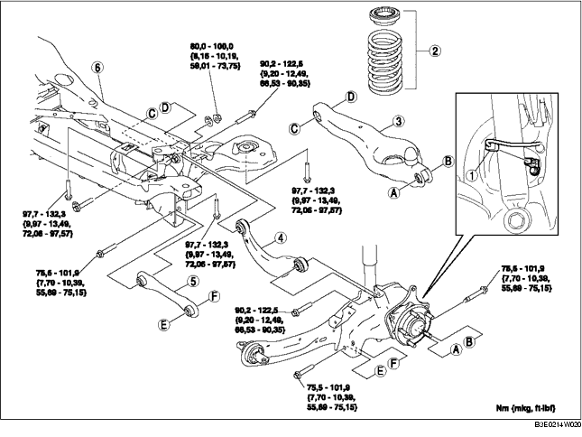

1. Den hinteren Sensor des automatischen Leuchtweitenreglers ausbauen.
(Siehe SENSOR FÜR AUTOMATISCHE LEUCHTWEITENREGELUNG AUSBAUEN/EINBAUEN.)
2. Den Hinterachsstabilisator abmontieren.
(Siehe HINTEREN STABILISATOR AUSBAUEN/EINBAUEN.)
3. Den Aktivkohlebehälter ausbauen.
(Siehe AKTIVKOHLEBEHÄLTER AUSBAUEN/EINBAUEN [ZJ, Z6, LF].)
4. Gemäß der Reihenfolge in der Tabelle ausbauen.
5. Der Einbau erfolgt in umgekehrter Reihenfolge.
6. Die Achsgeometrie prüfen und ggf. einstellen.
(Siehe HINTERACHSGEOMETRIE.)

.
|
1
|
Steckverbinder am Kabelbaum des ABS-Raddrehzahlsensors
|
|
2
|
Hinterrad-Schraubenfeder
|
|
3
|
Unterer Hinterad-Querlenker
|
|
4
|
Oberer Hinterrad-Querlenker
|
|
5
|
Hinterer Querlenker
|
|
6
|
Hinterachsfahrschemel
|
1. Den Hinterachsfahrschemel mit einem Wagenheber abstützen und die Schraube herausdrehen.
2. Den hinteren Querträger abmontieren.